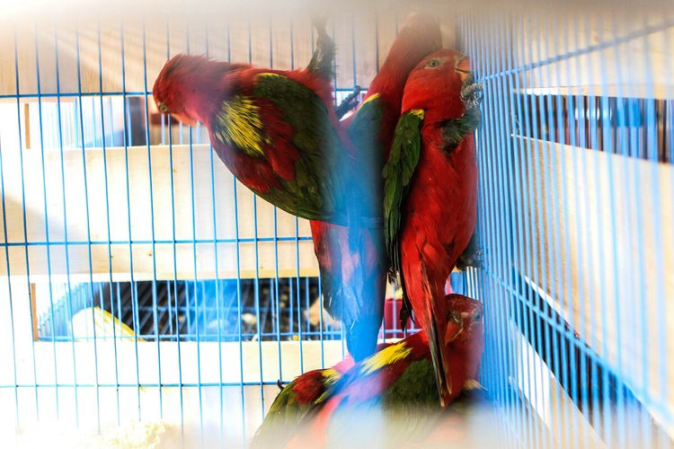

aneka ragam hewan khas
Fauna Maluku Utara merupakan perpaduan spesies Asia dan Australia. Sehingga, terdapat aneka burung endemik yang daerah persebarannya terbatas di wilayah tersebut. Salah satu burung endemik yang paling terkenal adalah kakaktua putih. Ada juga burung khas, di antaranya merpati, burung beo, burung kukuk, burung sandpiper, dan dara laut. Baca juga: Mengenal Soasio dan Tongowai, Situs Bersejarah di Bawah Laut Tidore Provinsi yang dikenal sebagai surga burung endemik ini memiliki sejumlah tempat yang bisa dikunjungi jika ingin melakukan pengamatan. Salah satunya yaitu di Taman Nasional Aketajawe Lolobata. Mamalia seperti kelelawar, musang, rusa, babi rusa (sejenis babi liar), dan berbagai jenis tikus juga banyak ditemukan di alam. Artikel ini telah tayang di Kompas.com dengan judul "5 Keindahan Maluku Utara, Provinsi dengan Penduduk Paling Bahagia
